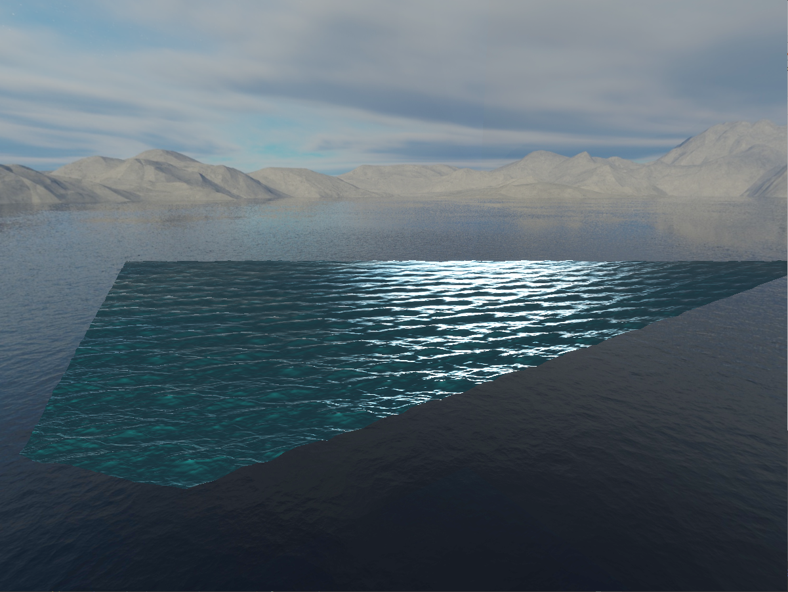
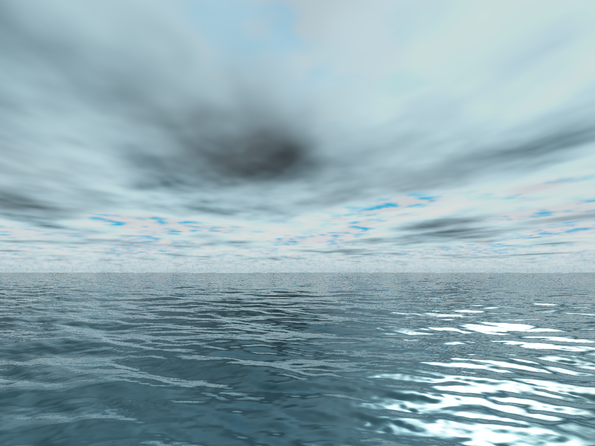

Rendering an Ocean

October 19, 2021
Introduction
Ocean rendering is a complex and challenging problem for real time rendering, as oceans are exceedingly large, constantly changing, and comprised of a large volume of translucent material that interacts with light in complex ways. When rendering an ocean, there are three major components for creating a realistic real time ocean environment: the waveform, the world model, and the lighting.
Waveform
One of the most fundamental aspects of a realistic ocean is its shape, which is determined by a simulation of its many compounding waves. There are several methods to accomplish this, with some of the most popular being either Gerstner waves, or Jerry Tessendorf's method of applying an inverse Fourier transform to a grid of wave data in the frequency domain, which to my knowledge does not have as slick of a name, so I will henceforth refer to it as Tessendorf waves.
For my simulation, I chose Tessendorf waves over Gerstner waves, as Gerstner waves require a much slower, iterative calculation of waveforms comprised of multiplying and summing sine waves for each point of interest. While this is quite intuitive and simple to implement, it is not as efficient for the large number of waves required to make an ocean look realistic. Tessendorf's method provides an obvious optimization to summing sine waves, which is to utilize the Fast Fourier Transform (FFT) and apply it to a set of wave data in the frequency domain. Listed in hispaperis a realistic-looking ocean wave frequency model called the Phillips spectrum, which provides a conveniently tileable set of waves in an nxn grid.
World Model
Since the ocean is very large, and often in the context of a game, essentially infinite, various tricks have to be utilized to only render the parts of the ocean relevant to the observer. Ideally, this means rendering no more than what is in the viewport. While multiple methods exist for this, with varying trade-offs between efficiency and detail, I chose Claes Johanson'sprojected gridmethod. This method takes a grid of vertices and projects them with a smooth, continuous level-of-detail onto the intersection of the camera frustum and the ocean plane. This results in extremely efficient utilization of rendered geometry.
{kind=link}
Lighting
In recent years, a common method of real-time lighting for games has been Physically Based Rendering (PBR) combined with Image Based Lighting (IBL). Through the use of heuristic equations that attempt to mimic light interacting with surfaces of various roughness and metallicity, much of the work for rendering a plausible ocean is already included in the implementation of these equations, which include diffuse lighting, specular lighting, ambient lighting (through IBL), environmental reflection maps (also through IBL), and the Fresnel effect. Some effects are not present however, such as translucency, transparency, and subsurface scattering, which I have made attempts at implementing with various degrees of success.
{kind=link}
Catmull-Rom Interpolation
Since I chose to use a fairly low resolution texture for my Tessendorf ocean tile (256x256), mapping the waves onto the world model left it with some artifacts. To alleviate this I implemented Catmull-Rom interpolation of the ocean's displacement map to smooth out the sampling. This method allows me to get more detail out of the ocean data at the cost of more texture samples per vertex.